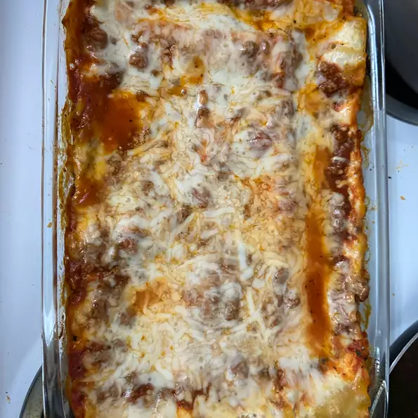

Lasagna

Description
Lasagna is a wide, flat sheet of pasta. Lasagna can refer to either the type of noodle or to the typical lasagna dish which is a dish made with several layers of lasagna sheets with sauce and other ingredients, such as meats and cheese, in between the lasagna noodles.
Ingredients
- 1 pound ground beef
- 2 ½ cups KRAFT Shredded Low-Moisture Part-Skim Mozzarella Cheese, divided
- (15 ounce) container POLLY-O Natural Part Skim Ricotta Cheese
- ½ cup KRAFT Grated Parmesan Cheese, divided
- ¼ cup chopped fresh parsley
- 1 egg, beaten
- 1 (24 ounce) jar spaghetti sauce
- 1 cups water
- 12 lasagna noodles, uncooked
Steps
- Heat oven to 350 degrees F.
- Brown meat in large skillet on medium-high heat. Meanwhile, mix 1 1/4 cups mozzarella, ricotta cheese, 1/4 cup Parmesan, parsley and egg until well blended; set aside.
- Drain meat; return to skillet. Stir in spaghetti sauce. Add 1 cup water to empty sauce jar; cover with lid and shake well. Add to meat mixture; stir until well blended. Spread 1 cup meat sauce onto bottom of 13x9-inch baking dish; top with layers of 3 lasagna noodles, 1/3 of the ricotta cheese mixture and 1 cup meat sauce. Repeat layers twice. Top with remaining noodles, meat sauce and cheeses. Cover with greased foil.
- Bake 1 hour or until heated through, removing foil after 45 min. Let stand 15 min. before cutting to serve.
Back to Home